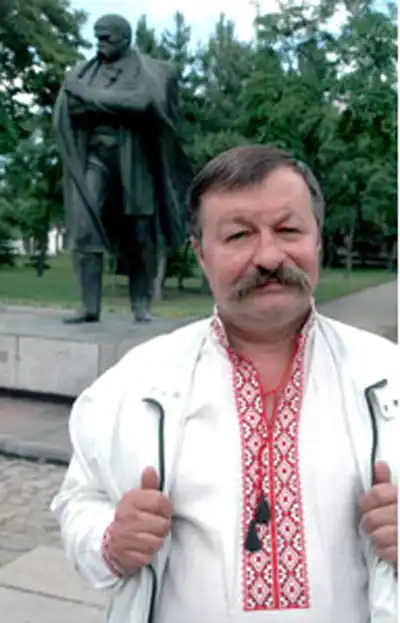
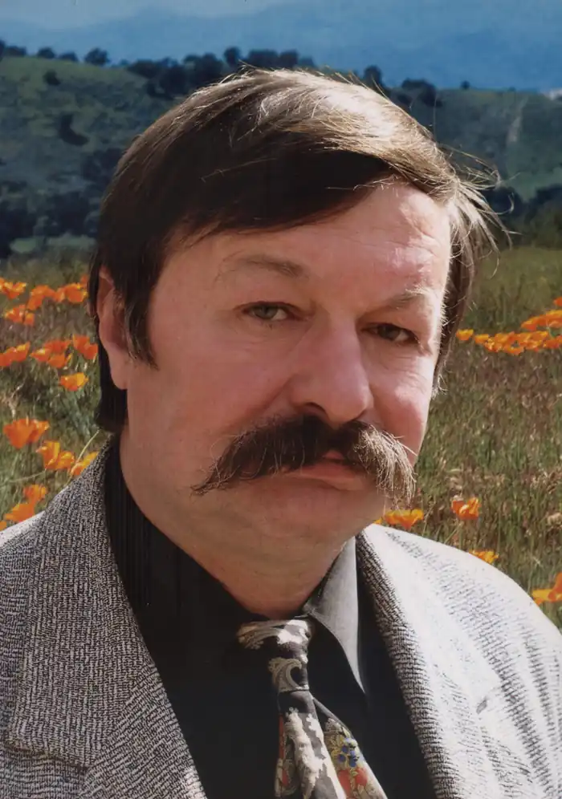

Дмитро Дмитрович Кремінь народився 21 серпня 1953 року в с. Суха Іршавського району Закарпатської області, в сім'ї колгоспника.
Випускник філологічного факультету Ужгородського держуніверситету (1975). По закінченню працював за направленням учителем української мови та літератури та російської мови та літератури в Казанківській середній школі № 2 (смт Казанка Миколаївської області) (1975—1977). Пізніше був кореспондентом районної газети (1977—1979). Після переїзду до Миколаєва, який став для поета другою Батьківщиною, обіймав посаду викладача кафедри української літератури в Миколаївському педінституті ім. В. Бєлінського (1979—1980), керував обласною літературною студією "Джерела" (1980—1987), став заввідділу найбільшої в області молодіжної газети "Ленінське плем'я" (1980—1990). Працював кореспондентом газети, завідуючим відділу в газетах "Ленінське плем'я", "Радянське Прибужжя", "Рідне Прибужжя". З 1993 року – керівник обласної молодіжної літературної студії "Борвій".
У різні роки перебував на посадах доцента Миколаївської філії Київського національного університету культури і мистецтв, Миколаївського національного університету імені В. О. Сухомлинського, професора Південнослов'янського інституту Київського славістичного університету, Міжнародного класичного університету імені П. Орлика, Миколаївського обласного інституту післядипломної педагогічної освіти (за сумісництвом). Автор збірок: "Травнева арка" (1978), "Південне сяйво"(1982), "Танок вогню"(1983), "Бурштиновий журавель"(1987), "Шлях по зорях"(1990), "Пектораль"(1997), "Елегія Троянського вина" (2001), "Атлантида під вербою" (2003), "Полювання на дикого вепра" (2006), "Віфлеємська зоря" (2007), "Літній час" (2007), "Лампада над Синюхою" (2007, спільно з народним художником України А. Антонюком), "Вибрані твори" (2007, серія "Бібліотека Шевченківського комітету"), "Скіфське бароко" (2008), "Скіфське золото" (2008), книга-трилінгва "Два береги" (2008, у співавторстві з В. Пучковим), "Замурована музика" (2011), "Медовий місяць у Карфагені" (2014), "Сльози Сухого Фонтану" (2014), "Скрипка з того берега" (2016), "Poems from the Scythin Wild Field" (2016, видана у Канаді), "Між Карпатами і Татрами" (2016). Друкувався в журналах та газетах: "Вітчизна", "Дніпро", "Київ", "Дружба народов", "Ранок", "Юность", "Кур'єр Кривбасу", "Українська культура", "Україна", "Дружба народов", "Ленінське плем'я", "Закарпатська правда", "Південна правда", "Вечерний Николаев", "Ukraine", "Вежа", "Море", "London Magazine", "Prism", "Hayden's Ferry Review", "Eclectica" в альманахах, антологіях, колективних збірках. Лауреат Республіканської літературної премії ім. Василя Чумака (1987), Миколаївської обласної премії імені Миколи Аркаса (1994), обласної журналістської премії ім. О. Самойленка (2008), Всеукраїнської літературної премії імені Володимира Свідзінського (2011), Всеукраїнської літературної премії ім. Зореслава (2013), Всеукраїнської літературної премії ім. В. Сосюри (2013), літературної премії ім. Л. Вишеславського (2013), міжнародної літературної премії ім. І. Кошелівця (2014). 1999 року збірка віршів "Пектораль" (1997) здобула Національну премію України ім. Т. Г. Шевченка (1999). Дмитро Кремінь був yдocтoєний звання "Гopoдянин року" в нoмiнaцiї "Мистецтво" (1999) та Людина року" (2016), "Людина року Миколаївщини" (2008, 2016). Нагороджений Почесною грамотою Верховної Ради України (2010), відзнакою Миколаївської обласної ради "За заслуги перед Миколаївщиною" І ступеня, неодноразовий переможець конкурсу "Краща Миколаївська книга". Лауреат міжнародної літературної премії імені Миколи Гоголя "Тріумф" (2020, посмертно). Член Національної спілки письменників України (1979). Заслужений діяч мистецтв України (2016). Головний редактор журналу "Соборна вулиця" (2012-2018). 2010 – 2018 р. – голова Миколаївського вiддiлення Національної спілки письменників України. Помер 25 травня 2019 року, м. Миколаїв.